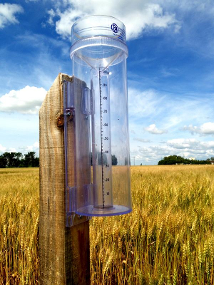

The web map is an experimental tool intended to depict local, community-level conditions and how recent weather and climate events have affected those communities. Volunteer observers provide weekly reports through the Community Collaborative Rain, Hail, and Snow (CoCoRaHS) network website. The web map spatially displays the reports and provides other contextual information such as the current US Drought Monitor Map that can be used in the monitoring of drought onset, intensification, and recovery.
About the Web Map
Using the Web Map

Click the image to learn more
CoCoRaHS Data
The condition monitoring web map is designed to work primarily with CoCoRaHS condition monitoring data. This data includes both precipitation measurements as well as qualitative descriptions of local conditions reported by observers. Click the observer point location in the web map to read the condition report in a pop up. Use the time slider at the bottom of the page to sort through past reports.
Data Search
The CoCoRaHS data on the map can be searched through three functions. First, the reports displayed on the map can be searched in the left "Reports of Interest" box. The reports can be searched using keywords, counties, station number, and report category. Second, all of the report data can be downloaded as a .csv file and queried using computer software such as Microsoft Excel. Third, the CoCoRaHS data website has a query box for searching all data by station, location, category, and date.

Click the image to learn more

Click the image to learn more
U.S. Drought Monitor
The National Drought Mitigation Center (NDMC) publishes a weekly report of US drought conditions through the U.S. Drought Monitor (USDM). It is jointly produced by NDMC at the University of Nebraska-Lincoln, the US Department of Agriculture, and the National Oceanic and Atmospheric Administration (NOAA). The USDM map is available as a layer in the web map, allowing a comparison of condition monitoring reports with USDM drought designations. Use the time slider to sort through weekly time intervals.
More Map Layers
The layer control in the top right portion of the screen can be used to turn overlay data on and off. Additional map layers include the National Weather Service forecast offices, US Climate Divisions, South Carolina and North Carolina county lines, ecological regions, and HUC-6 watershed boundaries.

Click the image to learn more
Become a CoCoRaHS Condition Monitoring Observer
Who can participate... Anyone with a desire to learn more about how weather can impact our lives and an enthusiasm for watching and reporting weather conditions can join. Consistent reporting will contribute to a more complete understanding of the weather and climate. Additionally, observers will get the chance to participate in an enthusiastic network of like-minded citizen scientists. Click here to learn more about CoCoRaHS condition monitoring.


About the Project
The web map is part of a project to assess how information provided by citizen scientists can support drought-related decision making. With support from the National Integrated Drought Information System (NIDIS), the Carolinas Integrated Sciences & Assessments (CISA) team is collaborating with the CoCoRaHS to establish the condition monitoring program. In addition to their daily precipitation measurements, CoCoRaHS volunteers are asked to provide descriptions of the conditions in their local community in order to assess how recent weather patterns have influenced these conditions. These reports are then displayed on the web map.
Collaborators
CoCoRaHS
- Community Collaborative Rain, Hail & Snow Network
NDMC
- National Drought Mitigation Center
NIDIS
- National Integrated Drought Information System
CISA
- Carolinas Integrated Sciences & Assessments